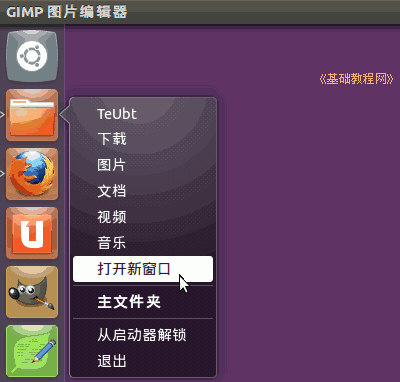
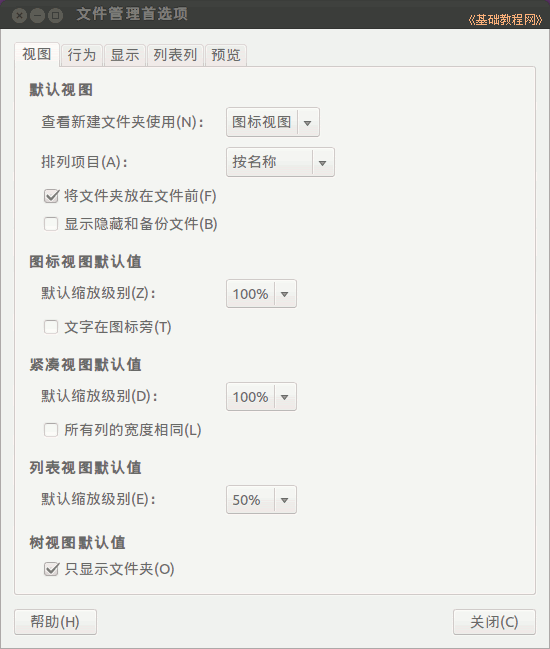

Ubuntu/GNOME 桌面程序指南
作者：TeliuTe 来源：基础教程网
五、主文件夹 返回目录 下一课主文件夹是用户的个人文件夹，也存放用户的配置文件；
1、主文件夹
1）点击左侧栏的主文件夹按钮，或者也可以点右键选“打开新窗口“，打开另一个主文件夹窗口；

2）打开主文件夹窗口，里面包含几个默认的文件夹，桌面、文档、下载、音乐、图片和视频等，分别存放对应的文件；
3）左侧的位置栏中可以快速切换到不同的分区或目录文件夹，U盘等可移动磁盘也显示在这里，主文件夹的图标是个小房子；
4）在任意一个文件夹上点右键，选择“在新标签打开“，可以在一个窗口中显示多个文件夹内容，点击上边的标签切换；

5）上边的位置栏点击可以切换各级文件夹位置，右侧是前进、后退和搜索文件，操作跟跟网页浏览器类似；
6）点顶部菜单“转到 - 位置”可以把位置栏切换到地址栏状态，可以复制粘贴地址，操作跟跟网页浏览器类似；
7）点“查看”菜单可以切换成图标、列表和紧凑排列方式查看文件，按快捷键要方便些 Ctrl+1、2、3；
2、设置首选项
1）点顶部菜单“编辑－首选项“，出来设置窗口，包括五个标签项目；

2）点第二个“行为”标签，可以勾选“单击打开”和下面的“包含绕过回收站的删除”，方便永久删除操作；
3）点最后一个“预览”标签，可以将预览文件适当调小一些；
4）修改项直接生效，点关闭返回；
本节学习了主文件夹操作的基础知识，如果你成功地完成了练习，请继续学习下一课内容；
本教程由86团学校TeliuTe制作|著作权所有
基础教程网：http://teliute.org/
美丽的校园……
转载和引用本站内容，请保留作者和本站链接。